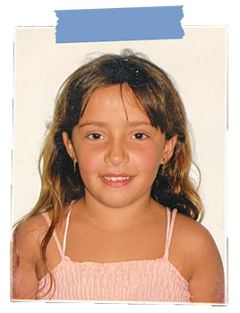

hola!
Soy Emilia, tengo 22 años y estudio Diseño y Comunicación visual en la Universidad Nacional de Lanús. Lo que más me gusta del mundo del diseño, es que cada proyecto que hago lleva algo de mi personalidad, en mayor o menor proporción, y es eso lo que los hace únicos. Es por eso que, además de ver mis trabajos y conocer mi perfil académico, en esta página te cuento qué cosas hacen a Emilia, Emilia.
VIVIR COCINANDO
Desde chiquita me gusta mucho cocinar. Tanto, que en 2021 decidí estudiar Pastelería Profesional. Es una carrera corta, de un año, que me gustó mucho y sin dudas volvería a hacer. Tres años después de eso, en 2024, médicos descubrieron que soy celíaca. Así, tuve que empezar a aplicar mis conocimientos gastronómicos en mis comidas de todos los días. Lejos de ser una carga para mi, cocinar y descubrir nuevas recetas todo el tiempo es algo que me fascina.
MIS PASATIEMPOS
Aparte de disfrutar de la facultad, también mi creatividad está en constante crecimiento con mis clases de cerámica. Voy hace ya 4 o 5 años aproximadamente, y al tener tantas piezas acumuladas, con mi hermana decidimos crear un emprendimiento. Amasar, estirar, pintar, volver a amasar, hornear, esperar, volver a amasar; Terracota, es otra forma que encontré de diseñar y desarrollar mi creatividad.
MI PUEBLO
Vivo en un pueblo llamado Vicente Casares, en el partido de Cañuelas. Casares es un pueblo tranquilo y pequeño, de (muy) pocas cuadras y con una escencia muy de campo. Viví acá toda mi vida, y la mayoría de mi familia también. La paz y tranqulidad del pueblo es algo imposible de explicar, y algo que me gustaría vivir por siempre. Soy fiel creyente de que los lugares que habitamos también nos hacen ser quienes somos, y yo sé que tengo una parte de Vicente Casares en mí.